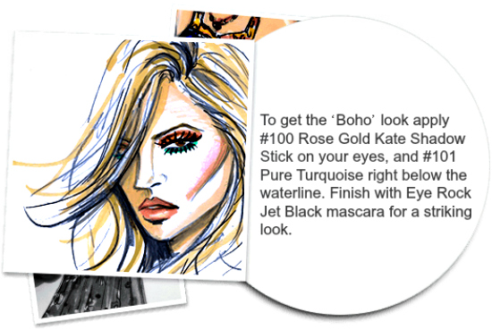

To finish off the "Glam Eye" just add liner and mascara for drama affect by Rimmel London - goldenbeautify
Creat a the perfect eye
- Continue with your fav eye look, and add gel liner and mascara.
- Or Pick any of the two look we have here for you.
- The First look is the 'Boho' look
- Then Second look we have here is 'Hippy Deluxe' look
